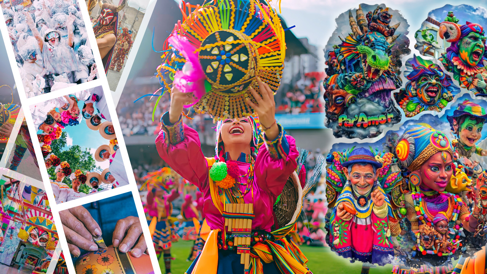
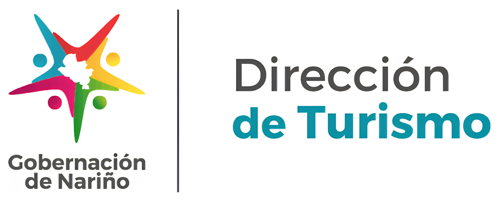
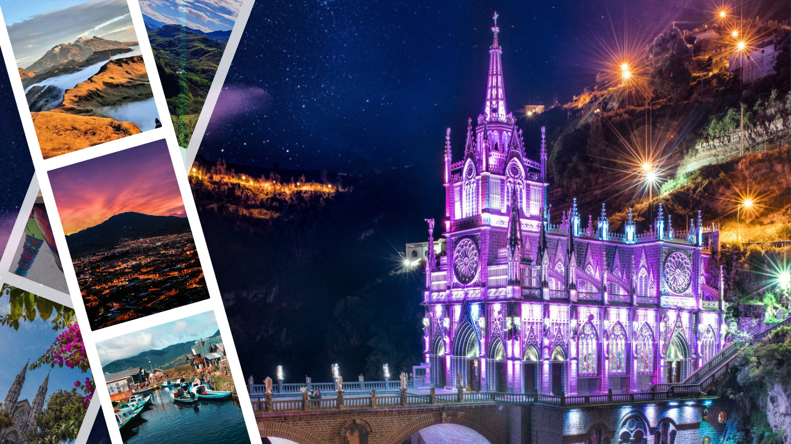
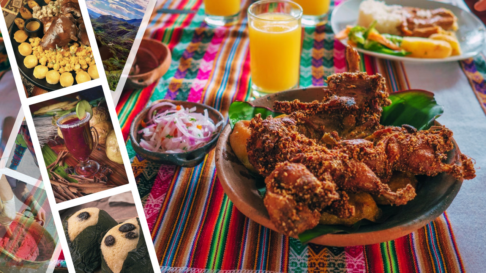

Somos Cultura y Tradición
Descubre las tradiciones, celebraciones y expresiones que hacen de Pasto una ciudad llena de identidad. Conoce su historia, sus artesanías y las costumbres que mantienen viva la esencia nariñense.
Ver más

Descubre las tradiciones, celebraciones y expresiones que hacen de Pasto una ciudad llena de identidad. Conoce su historia, sus artesanías y las costumbres que mantienen viva la esencia nariñense.
Ver más
Explora los paisajes naturales que rodean a Pasto y déjate sorprender por sus volcanes, lagunas y montañas. Descubre lugares para conectar con la naturaleza, disfrutar del paisaje y vivir nuevas aventuras.
Ver más
Descubre los sabores que representan a Pasto y Nariño a través de sus platos y preparaciones tradicionales. Conoce las comidas típicas, ingredientes y lugares donde podrás disfrutar de la auténtica gastronomía de nuestra tierra.
Ver más